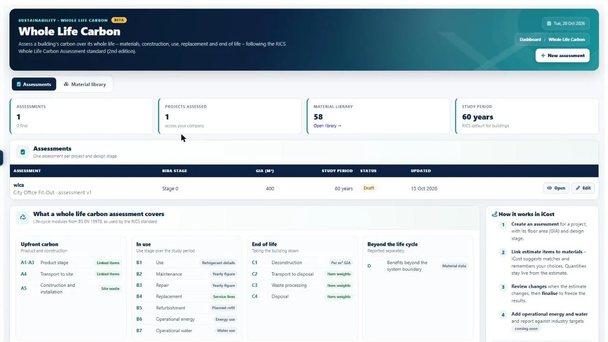

Embodied carbon calculator
An embodied carbon calculatorbuilt into your estimate.
Work out embodied carbon from the quantities you have already priced. Every estimate line can carry a carbon factor, and whole life carbon assessments (beta) cover the full life of the building.

The problem
Carbon in one spreadsheet,
cost in another.
Tenders and planning conditions increasingly ask for carbon figures, and working them out separately from the estimate doubles the work.
Quantities are copied into a separate carbon spreadsheet.
Carbon is worked out from the same estimate quantities as the cost.
Weights have to be calculated by hand from sizes and units.
Weights are worked out from each item's size and unit.
Matching BOQ wording to carbon data takes hours.
Smart matching copes with typos and BOQ shorthand, with an accuracy slider.
Consultants are expensive for every tender.
Your team produces the figures inside I-Cost.
When the estimate changes, the carbon figures don't.
Carbon updates with the estimate.
Only the product stage gets counted.
Whole life carbon covers A1 to D (beta).
In I-Cost
Cost and carbon
from the same quantities.
Each estimate line can carry an embodied carbon factor from UK ICE data or your own EPDs. For a full assessment, whole life carbon (beta) links estimate items to materials and covers stages A1–A5, B1–B7, C1–C4 and D, following the RICS Professional Standard (2nd edition) and BS EN 15978. You confirm any uncertain match.
- Embodied carbon per estimate line
- UK ICE and your own EPD factors
- Whole life carbon, A1–A5 to D Beta
- Weights worked out for you
- Smart matching with accuracy slider
- Carbon dashboard and reports
Step by step
How to calculate carbon
in I-Cost.
Price the estimate
Import the BOQ or model and price it as usual.
Match materials
I-Cost suggests a material for each item; confirm or change the uncertain ones.
Check the weights
Weights come from each item's size and unit; adjust any you know better.
Report
See carbon by line, material and life-cycle stage, and download the results.
Life-cycle stages
What a whole life
carbon assessment covers.
| Stages | In I-Cost | |
|---|---|---|
| Upfront | A1–A3 product, A4 transport to site, A5 construction | From the estimate quantities and material factors |
| In use | B1–B7 use, maintenance, repair, replacement, refurbishment, energy, water | Over the study period (60 years for buildings by default) |
| End of life | C1–C4 deconstruction, transport, processing, disposal | From material weights |
| Beyond the life cycle | D benefits beyond the system boundary | Reported separately |
What is embodied carbon?
The greenhouse gas emissions from making, transporting and installing building materials, and from maintaining, replacing and disposing of them, as opposed to the operational carbon from running the building.
Which carbon data does I-Cost use?
UK ICE (Inventory of Carbon and Energy) factors and your own EPD or company factors, per estimate line.
Is the whole life carbon assessment RICS compliant?
It follows the RICS Professional Standard for whole life carbon assessment (2nd edition) and BS EN 15978 life-cycle stages. It is in beta, and formal submissions should still be reviewed by a qualified assessor.
Is the carbon calculator included in the price?
Yes. Carbon is part of the one plan at £35 per user per month, with a 7-day free trial.
More of I-Cost
One platform for the whole job.
Everything below works together, from the same estimate. See the full platform.